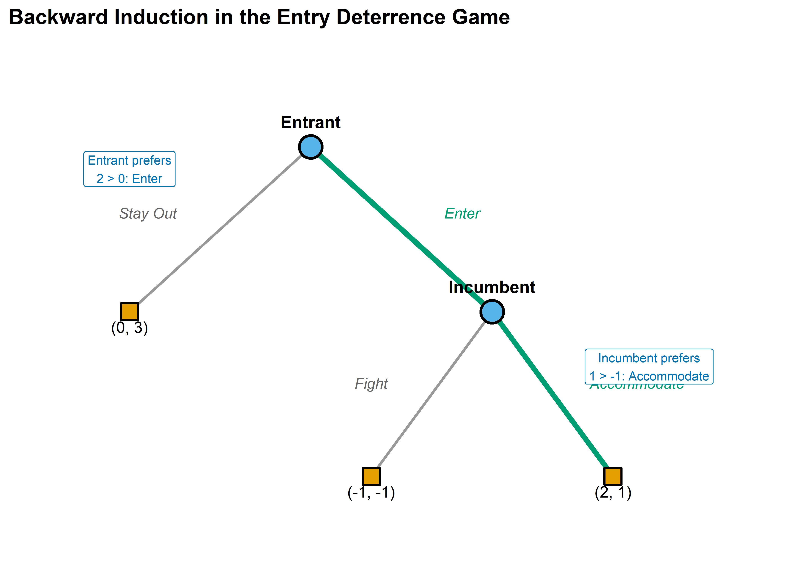

# Define the game tree as a data structure
# Each node: id, player, label, x/y position
nodes <- tibble(
id = c("root", "inc", "t1", "t2", "t3"),
player = c("Entrant", "Incumbent", NA, NA, NA),
label = c("Entrant", "Incumbent", "(0, 3)", "(2, 1)", "(-1, -1)"),
x = c(0, 1.5, -1.5, 2.5, 0.5),
y = c(3, 1.5, 1.5, 0, 0),
is_terminal = c(FALSE, FALSE, TRUE, TRUE, TRUE)
)
# Edges: from, to, action label
edges <- tibble(
from_x = c(0, 0, 1.5, 1.5),
from_y = c(3, 3, 1.5, 1.5),
to_x = c(1.5, -1.5, 2.5, 0.5),
to_y = c(1.5, 1.5, 0, 0),
action = c("Enter", "Stay Out", "Accommodate", "Fight")
)7 Extensive-Form Games
Abstract
Game trees, backward induction, and subgame perfect equilibrium — the tools for analyzing sequential strategic interaction where timing and information matter.
Keywords
extensive form, game tree, backward induction, subgame perfection, information set
8 Extensive-Form Games
Learning objectives
- Represent sequential games as game trees with nodes, branches, and information sets.
- Translate between extensive-form and normal-form representations of a game.
- Apply backward induction to solve finite games of perfect information.
- Define subgame perfect equilibrium and explain why it refines Nash equilibrium.
- Implement backward induction in R and visualize game trees with ggplot2.
8.1 Motivation
The normal-form games introduced in Chapter 5 assume that players choose their strategies simultaneously, without observing each other’s actions. Many real-world interactions, however, unfold over time. A firm decides whether to enter a market after observing an incumbent’s investment in capacity. A prosecutor makes a plea offer before the defendant decides whether to accept it. A chess player moves in response to an opponent’s prior move.
When the sequence of moves matters, we need a richer representation than a payoff matrix. The extensive form models games as trees, where each node represents a decision point, each branch represents an available action, and the tree’s structure encodes who moves when and what they know at the time of their decision. This representation, introduced by Neumann & Morgenstern (1944) and refined by Kuhn (1953), is the standard framework for analyzing sequential strategic interaction.
The key payoff of moving to the extensive form is a sharper solution concept. As we saw in Chapter 6, Nash equilibrium can sustain outcomes based on threats that a player would never actually carry out. Backward induction — reasoning from the end of the game back to the beginning — eliminates such non-credible threats and leads to subgame perfect equilibrium (SPE), a refinement that requires rational play in every subgame, not just on the equilibrium path.
8.2 Theory
8.2.1 Game trees
An extensive-form game consists of:
- A set of players \(N = \{1, 2, \ldots, n\}\).
- A game tree — a directed tree with a distinguished root node.
- A player function assigning each non-terminal (decision) node to a player.
- Actions labeling the branches from each decision node.
- Information sets partitioning each player’s decision nodes into groups within which the player cannot distinguish (reflecting what the player knows at that point).
- Payoff vectors assigned to each terminal node.
A game has perfect information if every information set contains exactly one node — that is, each player knows exactly where they are in the tree when they move. Chess, tic-tac-toe, and the entry deterrence game below are all games of perfect information. When an information set contains multiple nodes, the player faces imperfect information about prior moves; this connects to the analysis of Bayesian games in Chapter 9.
8.2.2 Strategies in extensive form vs. normal form
A strategy in the extensive form is a complete contingent plan: it specifies an action at every information set where the player might be called to move, including those that the strategy itself makes unreachable. This is a subtle but important distinction from the normal form. Two extensive-form strategies that differ only at unreachable information sets map to the same normal-form strategy but can have different implications for subgame perfection.
Any extensive-form game can be converted to a normal-form game (see Chapter 5) by enumerating all strategy combinations and computing the resulting payoffs. However, this conversion discards the sequential structure, and Nash equilibria of the normal form may include strategy profiles sustained by non-credible threats.
8.2.3 Backward induction
For finite games of perfect information, backward induction provides a constructive algorithm for finding rational play:
- Start at each terminal node and record the payoffs.
- Move to the decision nodes immediately preceding the terminal nodes. At each such node, the deciding player chooses the action that maximizes their payoff.
- Replace each such decision node with the terminal payoff that results from the optimal choice.
- Repeat until the root is reached.
Theorem: Zermelo–Kuhn
Every finite game of perfect information has at least one subgame perfect equilibrium in pure strategies, which can be found by backward induction (Osborne, 2004, 5).
8.2.4 Subgame perfect equilibrium
A subgame of an extensive-form game is any subtree that (i) begins at a singleton information set, (ii) contains all successors of its root node, and (iii) does not break any information set.
Definition: Subgame Perfect Equilibrium
A strategy profile is a subgame perfect equilibrium (SPE) if it induces a Nash equilibrium in every subgame of the game.
Every SPE is a Nash equilibrium, but not every Nash equilibrium is subgame perfect. The additional requirement of rationality in every subgame rules out strategies that rely on non-credible threats — actions a player would not actually carry out if called upon to do so. This refinement is the central contribution of Selten (1965) and is fundamental to the analysis of sequential games throughout this book.
8.3 Implementation in R
We implement the entry deterrence game — a classic example from industrial organization — as a game tree using ggplot2, then solve it by backward induction.
8.3.1 Defining the game tree
Consider an entry deterrence game with two players:
- Entrant (Player 1) chooses to Enter or Stay Out.
- Incumbent (Player 2), if entry occurs, chooses to Accommodate or Fight.
The payoffs are: if the entrant stays out, the incumbent keeps the monopoly (Entrant: 0, Incumbent: 3). If the entrant enters and the incumbent accommodates, both share the market (Entrant: 2, Incumbent: 1). If the entrant enters and the incumbent fights, both suffer losses (Entrant: -1, Incumbent: -1).
8.3.2 Drawing the game tree
# Backward induction result: at the incumbent's node, Accommodate (2,1)
# dominates Fight (-1,-1), so the incumbent accommodates.
# Knowing this, the entrant compares Enter -> (2,1) vs Stay Out -> (0,3):
# Entrant gets 2 > 0, so Enter is optimal.
# SPE path: Enter -> Accommodate
spe_edges <- tibble(
from_x = c(0, 1.5),
from_y = c(3, 1.5),
to_x = c(1.5, 2.5),
to_y = c(1.5, 0)
)
p_tree <- ggplot() +
# Draw all branches
geom_segment(data = edges,
aes(x = from_x, y = from_y, xend = to_x, yend = to_y),
colour = "grey60", linewidth = 0.8) +
# Highlight SPE path
geom_segment(data = spe_edges,
aes(x = from_x, y = from_y, xend = to_x, yend = to_y),
colour = okabe_ito[3], linewidth = 1.6) +
# Decision nodes
geom_point(data = filter(nodes, !is_terminal),
aes(x = x, y = y),
shape = 21, size = 6, fill = okabe_ito[2],
colour = "black", stroke = 1.2) +
# Terminal nodes
geom_point(data = filter(nodes, is_terminal),
aes(x = x, y = y),
shape = 22, size = 5, fill = okabe_ito[1],
colour = "black", stroke = 1) +
# Node labels
geom_text(data = filter(nodes, !is_terminal),
aes(x = x, y = y, label = label),
vjust = -1.5, fontface = "bold", size = 3.8) +
geom_text(data = filter(nodes, is_terminal),
aes(x = x, y = y, label = label),
vjust = 1.8, size = 3.5) +
# Action labels on edges
geom_text(data = edges,
aes(x = (from_x + to_x) / 2,
y = (from_y + to_y) / 2,
label = action),
nudge_x = c(0.5, -0.6, 0.7, -0.5),
nudge_y = c(0.15, 0.15, 0.1, 0.1),
size = 3.3, fontface = "italic",
colour = c(okabe_ito[3], "grey40", okabe_ito[3], "grey40")) +
# Annotation for backward induction reasoning
annotate("label", x = 2.8, y = 1.0,
label = "Incumbent prefers\n1 > -1: Accommodate",
size = 2.8, fill = "white", label.size = 0.3,
colour = okabe_ito[5]) +
annotate("label", x = -1.5, y = 2.8,
label = "Entrant prefers\n2 > 0: Enter",
size = 2.8, fill = "white", label.size = 0.3,
colour = okabe_ito[5]) +
scale_x_continuous(limits = c(-2.5, 4), expand = c(0, 0)) +
scale_y_continuous(limits = c(-0.8, 4), expand = c(0, 0)) +
labs(title = "Backward Induction in the Entry Deterrence Game") +
theme_publication() +
theme(
axis.text = element_blank(),
axis.title = element_blank(),
axis.ticks = element_blank(),
panel.grid = element_blank()
)
p_tree
save_pub_fig(p_tree, "entry-deterrence-backward-induction", width = 7, height = 5)
8.3.3 Backward induction algorithm
# A general backward induction solver for binary game trees
# encoded as nested lists
backward_induction <- function(node) {
# Terminal node: return payoffs
if (node$type == "terminal") {
return(list(payoffs = node$payoffs, path = list()))
}
# Recursive: solve each child subtree
left <- backward_induction(node$left)
right <- backward_induction(node$right)
# The moving player picks the branch maximizing their payoff
player_idx <- node$player # 1 or 2
if (left$payoffs[player_idx] >= right$payoffs[player_idx]) {
chosen <- left
action <- node$left_action
} else {
chosen <- right
action <- node$right_action
}
list(
payoffs = chosen$payoffs,
path = c(list(list(player = player_idx, action = action)), chosen$path)
)
}
# Encode the entry deterrence game
entry_game <- list(
type = "decision", player = 1,
left_action = "Stay Out",
left = list(type = "terminal", payoffs = c(0, 3)),
right_action = "Enter",
right = list(
type = "decision", player = 2,
left_action = "Accommodate",
left = list(type = "terminal", payoffs = c(2, 1)),
right_action = "Fight",
right = list(type = "terminal", payoffs = c(-1, -1))
)
)
result <- backward_induction(entry_game)
cat("SPE outcome payoffs:", result$payoffs, "\n")#> SPE outcome payoffs: 2 1cat("SPE path:\n")#> SPE path:for (step in result$path) {
cat(sprintf(" Player %d chooses: %s\n", step$player, step$action))
}#> Player 1 chooses: Enter
#> Player 2 chooses: Accommodate8.4 Worked example
We now trace through the entry deterrence game step by step to see exactly how backward induction eliminates non-credible threats.
Step 1: Identify the last decision node. The incumbent’s node is reached only if the entrant enters. At this node, the incumbent has two choices:
- Accommodate: payoff to Incumbent = 1
- Fight: payoff to Incumbent = -1
Since \(1 > -1\), a rational incumbent chooses Accommodate. Fighting is a non-credible threat — the incumbent would never carry it out if actually called upon to decide.
Step 2: Fold back to the first decision node. Knowing that the incumbent will accommodate upon entry, the entrant faces an effective choice between:
- Stay Out: payoff to Entrant = 0
- Enter: payoff to Entrant = 2 (since the incumbent will accommodate)
Since \(2 > 0\), the entrant enters.
Step 3: The subgame perfect equilibrium. The SPE strategy profile is (Enter, Accommodate), yielding payoffs \((2, 1)\).
# Convert to normal form to show the Nash equilibrium issue
# Entrant: {Enter, Stay Out}
# Incumbent: {Accommodate, Fight}
A_entry <- matrix(c(2, -1, 0, 0), nrow = 2, byrow = TRUE,
dimnames = list(c("Enter", "Stay Out"),
c("Accommodate", "Fight")))
B_entry <- matrix(c(1, -1, 3, 3), nrow = 2, byrow = TRUE,
dimnames = list(c("Enter", "Stay Out"),
c("Accommodate", "Fight")))
cat("Normal-form representation:\n")#> Normal-form representation:cat("Entrant payoffs:\n")#> Entrant payoffs:A_entry#> Accommodate Fight
#> Enter 2 -1
#> Stay Out 0 0cat("\nIncumbent payoffs:\n")#>
#> Incumbent payoffs:B_entry#> Accommodate Fight
#> Enter 1 -1
#> Stay Out 3 3source(here::here("R", "solvers.R"))
ne <- solve_2x2_pure_nash(A_entry, B_entry)
cat("\nPure-strategy Nash equilibria:\n")#>
#> Pure-strategy Nash equilibria:for (eq in ne) {
cat(sprintf(" (%s, %s) -> payoffs (%d, %d)\n",
rownames(A_entry)[eq[1]], colnames(A_entry)[eq[2]],
A_entry[eq[1], eq[2]], B_entry[eq[1], eq[2]]))
}#> (Enter, Accommodate) -> payoffs (2, 1)
#> (Stay Out, Fight) -> payoffs (0, 3)The normal form reveals two Nash equilibria: (Enter, Accommodate) and (Stay Out, Fight). The second equilibrium involves the incumbent threatening to fight if entry occurs — a threat that deters the entrant. But we showed above that this threat is non-credible: if the incumbent actually had to carry it out, they would prefer to accommodate. Subgame perfection eliminates (Stay Out, Fight), leaving only (Enter, Accommodate) as the unique SPE. This is the power of backward induction as a refinement of Nash equilibrium.
8.5 Extensions
The extensive form opens several directions explored later in this book:
- Bayesian games (Chapter 9) extend the extensive form to settings where players have private information about payoffs or types, using information sets to model uncertainty about nature’s prior moves.
- Repeated games (Chapter 10) can be viewed as extensive-form games with a particular tree structure, and the folk theorem relies on strategies conditioned on the history of play.
- Bargaining (Chapter 34) uses alternating-offer extensive-form games, where Rubinstein’s model yields a unique SPE through backward induction with discounting.
- Imperfect information generalizes the trees studied here by allowing information sets with multiple nodes, creating a bridge between the extensive form and the normal form.
For the foundational treatment of extensive-form games and backward induction, see Neumann & Morgenstern (1944) and Osborne (2004) (Chapters 5–7). The entry deterrence example follows the tradition of Selten’s chain-store paradox, which demonstrates the power of subgame perfection for eliminating non-credible threats in sequential games.
Exercises
Ultimatum game. Consider a simplified ultimatum game where Player 1 proposes a split of 10 units, choosing either Fair (5, 5) or Greedy (8, 2). Player 2 then accepts or rejects; rejection gives both zero. Draw the game tree, find all Nash equilibria in the normal form, and identify the subgame perfect equilibrium using backward induction. Which Nash equilibria are eliminated by subgame perfection?
Three-stage game. Three players move in sequence. Player 1 chooses L or R; Player 2 observes this and chooses A or B; Player 3 observes both prior choices and chooses X or Y. Terminal payoffs are: (L, A, X) = (3, 2, 1), (L, A, Y) = (1, 3, 2), (L, B, X) = (0, 1, 4), (L, B, Y) = (2, 0, 3), (R, A, X) = (1, 1, 1), (R, A, Y) = (2, 2, 0), (R, B, X) = (4, 0, 2), (R, B, Y) = (0, 3, 3). Apply backward induction to find the SPE. Implement the game tree as a nested list in R and verify your answer with the
backward_induction()function.Non-credible threats. Modify the entry deterrence game so that the incumbent’s Fight payoff is 2 instead of -1 (perhaps representing a market where fighting is costless). Recompute the SPE. Does the equilibrium change? Explain economically why the threat to fight is now credible.
SPE vs. NE counting. Convert the ultimatum game from Exercise 1 to normal form. Count all pure-strategy Nash equilibria and all subgame perfect equilibria. Verify that the set of SPE is a strict subset of the set of NE.
Centipede game. Two players alternate for 4 rounds, each choosing to Stop (ending the game) or Continue (passing to the other player). At round \(k\), stopping gives the stopper \(k\) and the other player \(0\). If both continue for all 4 rounds, each receives 3. What does backward induction predict? Implement this in R by extending
backward_induction()to handle a 4-node sequential game. Discuss why human behaviour in laboratory experiments typically departs from the backward-induction prediction.
Solutions appear in Appendix E.
Neumann, J. von, & Morgenstern, O. (1944). Theory of games and economic behavior. Princeton University Press.
Osborne, M. J. (2004). An introduction to game theory. Oxford University Press.